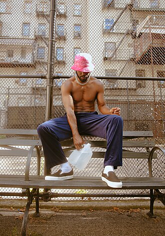

Luke James
Luke James Boyd is an American singer, songwriter and actor from New Orleans, Louisiana. He began his career in 2004 as one half of the R&B duo Luke and Q, who served as backing vocalists for R&B singer Tyrese. While doing so, they became acquainted with the singer's primary songwriting-production team, the Underdogs; the duo was led to sign with J Records. Their 2006 debut single, "My Turn" failed to chart, although Boyd continued to write songs—often under the wing of the Underdogs—for other prominent artists including Chris Brown, Britney Spears, and Justin Bieber during the duo's inactivity and subsequent disbandment in 2010.
Complete Discography & Tracklists (25)
2010 Rise From Ruin 🎵 11 Tracks
2014 Luke James (Deluxe) 🎵 15 Tracks
2014 Luke James 🎵 15 Tracks
2017 Move Me 🎵 0 Tracks
No tracks registered.
2017 Devotion 🎵 4 Tracks
2017 Nightspot 🎵 4 Tracks
2018 Discotheque 🎵 15 Tracks
2018 Funk Face 🎵 11 Tracks
2018 Spellbound 🎵 0 Tracks
No tracks registered.